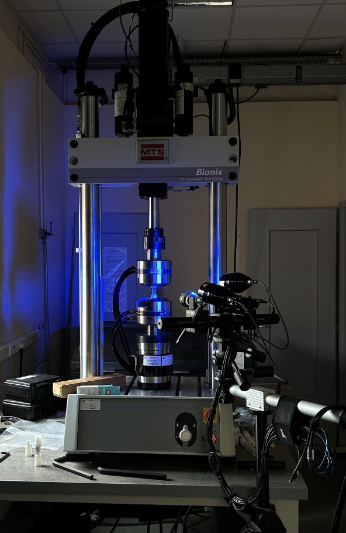
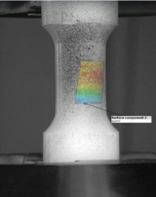
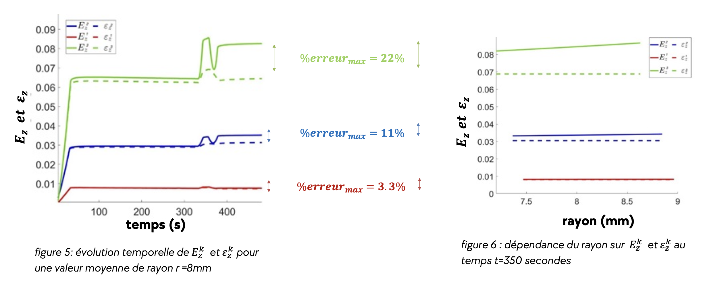

Le Contexte
L'objectif principal de ce stage de recherche était de préparer une démarche de modélisation fiable pour l'analyse de polymères. Le but précis était de déterminer mathématiquement et expérimentalement les conditions et les limites dans lesquelles l'hypothèse des petites déformations reste valide.
Pour cela, j'ai utilisé le formalisme Lagrangien afin de comparer le tenseur de déformation de Green-Lagrange ($E$) avec le tenseur des petites déformations ($\epsilon$), ainsi que le second tenseur des contraintes de Piola-Kirchhoff ($S$) avec le tenseur des contraintes de Cauchy ($\sigma$).

Démarche Expérimentale
Afin de recueillir des données tangibles, nous avons réalisé des essais de traction et de torsion couplés sur des éprouvettes en polyéthylène haute densité (PEHD). Pour balayer un large spectre de comportements, trois niveaux de chargement ont été appliqués :
- Faible : Déplacement de 0.3 mm et angle de 3°
- Modéré : Déplacement de 1.0 mm et angle de 10°
- Élevé : Déplacement de 1.8 mm et angle de 20°
Les efforts (Force et Couple) ont été mesurés via les capteurs de la machine, tandis que la cinématique de surface a été capturée via un système de corrélation d'images numériques 3D (DIC). Ce dispositif nous a permis d'extraire le champ de déplacement local exact sur l'éprouvette.

Analyse des Tenseurs
À l'aide d'un développement limité à l'ordre 1 du tenseur de Green-Lagrange, nous avons pu isoler le tenseur des petites déformations. Les résultats expérimentaux ont ensuite été traités sur Matlab pour comparer l'évolution temporelle et radiale (dans l'épaisseur du cylindre) des différentes composantes de contraintes et de déformations.

Conclusion de l'Étude
L'analyse comparative nous a permis de quantifier précisément les limites d'utilisation du modèle des petites déformations :
- Déformation faible (0.3mm / 3°) : L'approximation est hautement valide. L'erreur maximale observée n'est que de 3,3% entre $E$ et $\epsilon$.
- Déformation modérée (1mm / 10°) : L'approximation peut encore être utilisée avec prudence (erreur max de 11%).
- Déformation élevée (1.8mm / 20°) : L'hypothèse s'effondre avec une erreur grimpant à 22%. Les courbes ne se superposent plus, rendant l'utilisation des tenseurs de grandes déformations strictement obligatoire pour une modélisation précise.